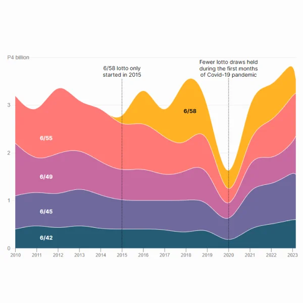
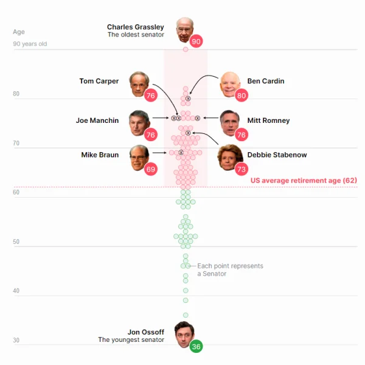
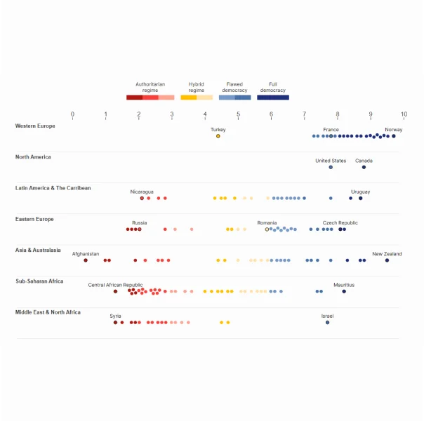
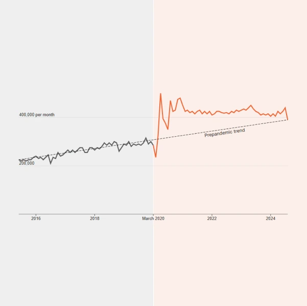
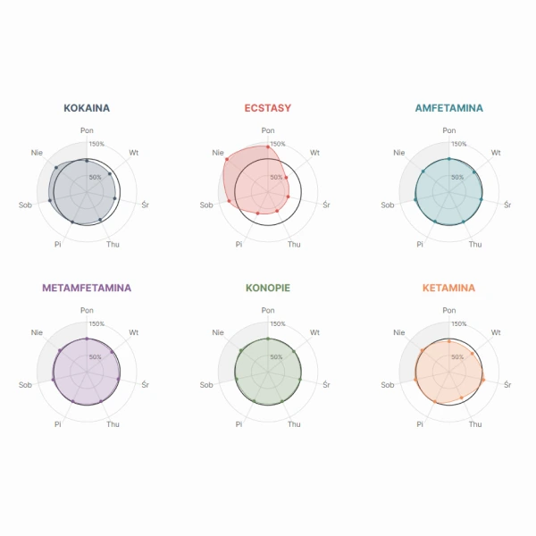

Recreating with D3
A weekly personal challenge with D3.js.
By Juanchi ParraEach week I'll recreate a data visualization that has caught my attention from a media outlet. Regardless of how it was visualized, I will try to recreate it using D3.js.
I'll try to achieve the same look and feel of the visualization, and as for the data, there might be some inaccuracy, it will depend on the accessibility of the data.
Why do I do it? It's a challenge that will give me obstacles and opportunities to learn, experiment, and share my knowledge with the data visualization community.
I know that I'll enjoy it and that I'll become more and more comfortable with using D3.js.
Recreations
The results of the presidential election in Venezuela
The results of the presidential election in Venezuela
Words used at the Democratic and Republican National Conventions
The likely scenarios for the United States presidential elections
Percentage of people living under each poverty line around the world
The scope of international sanctions imposed by the European Union
The increase in financial aid and extreme poverty in Spain
The decline in the passage of legislation by the United States Congress
United States presidential election results
Interstate moves in the United States and their relationship to election results

The increase of jackpot winners in Philippine lotto games

The aging of the United States chamber
Ukrainian soldiers casualties in the Russian-Ukrainian war
The performance of the DAX index over the past years
The Boeing 737 MAX aircraft and door plugs
Deaths in major earthquakes since 1900 in Turkey and Syria
The state distribution of natural disasters in the United States
The competition between Chinese and Japanese carmakers
The racial disparity in health care in the United States
The United States and its carbon pollution
The flow of international flights from Argentina
How San Francisco's budget is distributed with its new major
The WNBA revenues in the United States
The possible scenarios of the German federal election

The results of the Democracy Index 2024

How Covid changed the world
The trade deficit and import tariffs of the Donald Trump administration

The drug use in European cities